The same RAG pipeline gets evaluated twice, by two different open-source frameworks — the diagram follows both paths, including the concurrency fix that rescued Ragas and the intermittent JSON-parsing failure that DeepEval surfaces loudly.

| Node | Location | What it does |
|---|---|---|
| CONCURRENCY | ragas_eval.py:run_ragas_evaluation() | Ragas' default concurrency assumes a cloud judge API that handles many parallel requests fine — a local CPU-bound Ollama model doesn't. The real fix: RunConfig(max_workers=2), which recovered most of the failed context_precision scores from NaN to real numbers. |
| JSONPARSE | deepeval_eval.py:OllamaDeepEvalModel + DeepEval's internal verdict parser | DeepEval's metrics require the judge to output strict JSON. With llama3.2:1b, this SOMETIMES fails — not deterministically. The exact same code, same model, different input text, produced both a clean pass and a hard ValueError on different runs. |
| RAISEVALUEERR | DeepEval's internal utils.trimAndLoadJson() | On unparsable output, DeepEval raises immediately with a specific, actionable message rather than returning a wrong/default score — a LOUD failure, contrasting directly with Ragas' silent NaN on the analogous failure. |
Default settings: 6 of 16 internal judge sub-calls time out; context_precision comes back NaN for every single question in the eval set.
RAGASEVAL(default concurrency) → CONCURRENCY(too high) → TIMEOUTS → RAGASRESULT(NaN for context_precision)Same model, same questions, only max_workers=2 changed — context_precision recovers to 1.0 for 3 of 4 questions, faithfulness score nearly doubles.
The exact same FaithfulnessMetric + llama3.2:1b combination raised ValueError on one test case and returned a valid score on a simpler one — not a bug in this project's code, a real property of small local judge models.
DEMETRIC → JSONPARSE(fails on this input) → RAISEVALUEERR | DEMETRIC → JSONPARSE(succeeds on a simpler input) → DERESULT